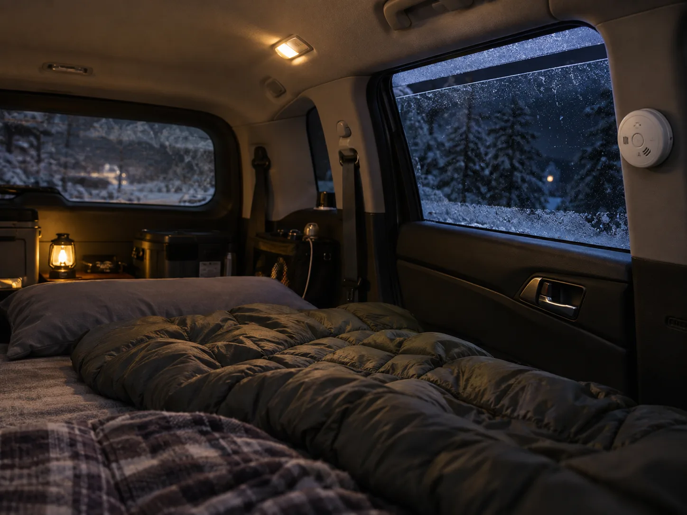
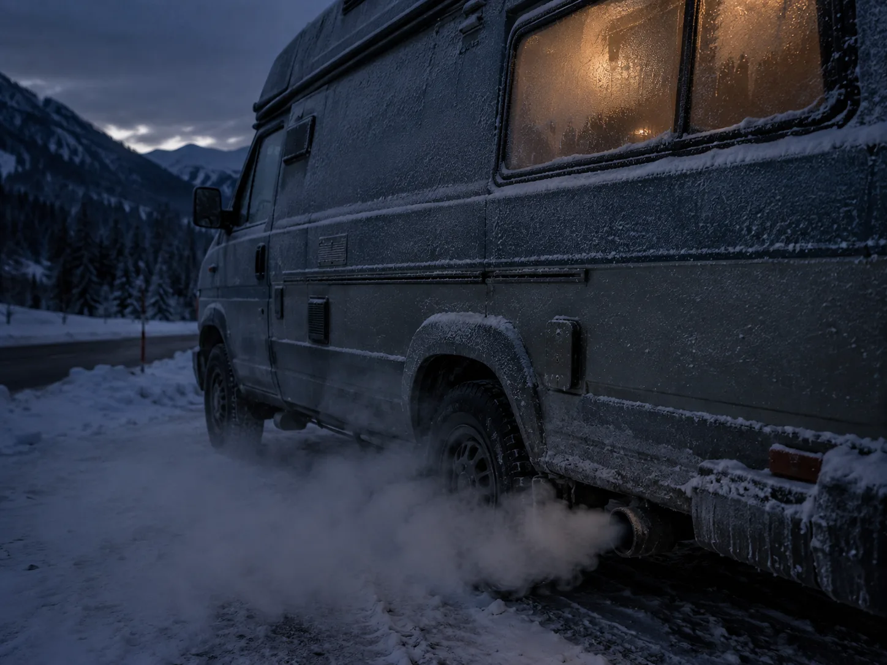
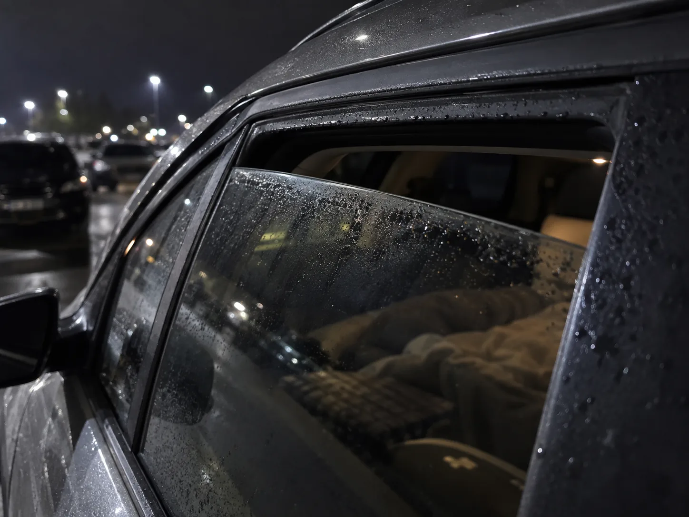
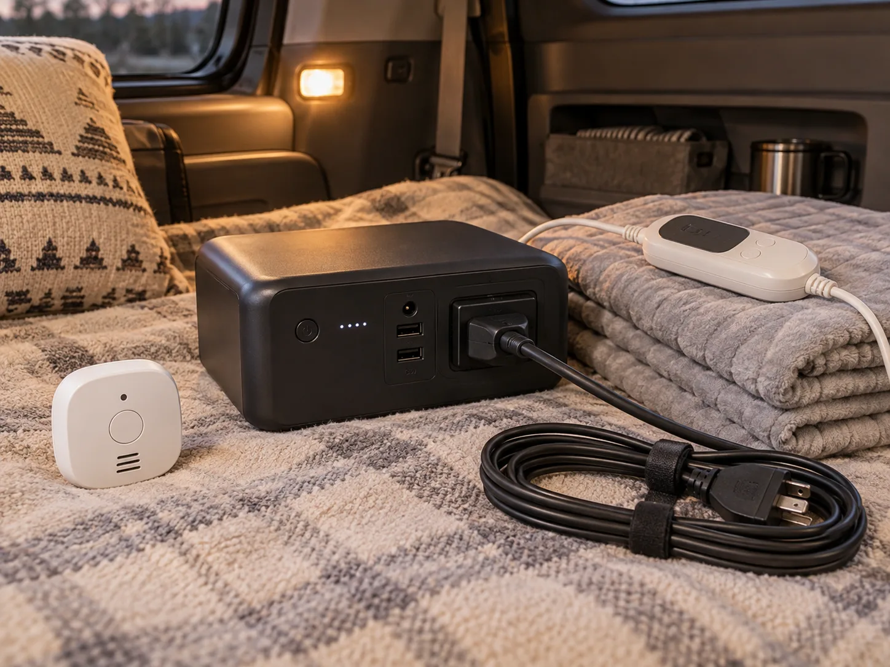

▲ 차박 중 질식 사고를 막는 가장 확실한 방법은 창문 틈 환기와 CO 경보기다 ⓒ CarPrism (AI 생성 이미지)
차박 사고 뉴스는 매년 겨울 비슷한 문장으로 시작한다. "동창 4명이 차 안에서 잠을 자던 중…" "연인이 텐트 안에서 숨진 채 발견돼…" 그리고 원인은 거의 항상 같다. 일산화탄소 중독.
불이 난 것도, 사고가 난 것도 아니다. 그저 시동을 끄지 않았거나, 난방기구를 켜둔 채 창문을 꽁꽁 닫고 잠들었을 뿐이다. 일산화탄소는 색도 냄새도 없어서, 위험한 농도에 이를 때까지 아무도 눈치채지 못한다.
1. 일산화탄소는 왜 특히 위험한가
일산화탄소(CO)는 연료가 불완전 연소할 때 나오는 기체다. 엔진 배기가스, 가스레인지, 무시동 히터, 번개탄, 숯불 모두 발생원이 될 수 있다. 문제는 이 기체가 색도 냄새도 자극성도 없다는 점이다. 가스가 샐 때 나는 특유의 냄새는 사실 부취제를 인위적으로 첨가한 것인데, 일산화탄소에는 그런 경고 신호가 전혀 없다.
📍 몸이 신호를 보내도 이미 늦을 수 있다
초기 증상은 두통, 어지럼증, 메스꺼움처럼 피로나 감기와 구분하기 어렵다. 문제는 잠든 상태에서는 이런 증상조차 인지할 수 없다는 것이다. 농도가 계속 올라가면 의식을 잃고, 그대로 사망에 이르는 경우가 실제 사고 사례의 공통된 패턴이다.
실제로 밀폐된 텐트나 차량에서 가스히터를 켜고 80분이 지나자 일산화탄소 농도가 1055ppm까지 치솟았다는 실험 결과가 보도된 바 있다. 이는 단시간 노출만으로도 사망에 이를 수 있는 수준이다.
2. 반복되는 사고 — 무시동 히터와 가스난로
최근 몇 년간 차박·캠핑 중 일산화탄소 중독 사고의 상당수는 무시동 히터에서 비롯됐다. 무시동 히터는 엔진 시동을 걸지 않고도 경유 등 연료를 별도로 연소시켜 온풍을 만드는 장치로, 연비 부담 없이 밤새 난방이 가능해 차박 인구 사이에서 빠르게 퍼졌다.
| 난방 방식 | 위험 요인 |
|---|---|
| 무시동 히터 | 배기구 시공 불량 시 배출된 CO가 흡기구로 재유입 |
| 가스(부탄) 난로 | 밀폐 공간 연소 시 산소 부족으로 불완전 연소 심화 |
| 번개탄·숯불 | 연소 지속 시간 내내 다량의 CO 배출 |
| 엔진 공회전 | 배기가스가 차체 틈으로 실내 유입 가능 |
2020년 전남 고흥에서는 개조 버스에서 차박하던 50대 고교동창 4명이 경유를 쓰는 무시동 히터를 켜고 잠들었다가 1명이 숨지고 1명이 중태에 빠지는 사고가 있었다. 경기 동두천에서는 텐트 안에 액화가스 난로를 피운 20대 연인이 숨진 채 발견되기도 했다. 매년 되풀이되는 이런 사고의 공통점은 "밀폐된 공간 + 실내 연소 + 취침"이라는 세 조건이 동시에 겹쳤다는 것이다.
✅ 무시동 히터·가스난로 사용 시 필수 수칙
· 배기구와 흡기구는 서로 최대한 멀리 떨어뜨려 시공·설치할 것
· 텐트나 차량 내부에서 취사용 가스버너·번개탄을 절대 켜두지 말 것
· 사용 중에도 주기적으로 환기하고, 몸이 나른하거나 두통이 생기면 즉시 야외로 나갈 것
· 정부는 무시동 히터 배기가스 CO 농도 허용기준을 담은 안전기준을 마련해 시행 중이므로 KC 인증 제품인지 확인할 것
국가기술표준원이 마련한 캠핑용 난방기구 안전기준의 세부 내용은 정책브리핑에서 확인할 수 있다. 정책브리핑 바로가기

▲ 시동을 켜둔 채 잠드는 것도 배기가스 역류로 인한 중독 위험이 있다 ⓒ CarPrism (AI 생성 이미지)
3. 환기 — 창문은 '살짝'이 아니라 '반드시'
가장 흔한 착각은 "추우니까 창문을 다 닫아야 한다"는 생각이다. 하지만 난방기구를 쓰는 밀폐 공간에서 창과 문을 모두 닫고 자면 질식 위험이 커진다. 실내 공기질 전문가들이 권하는 기본 원칙은 창문을 5~10cm 정도만 열어두는 '틈 환기'다. 이 정도 틈으로도 실내외 공기 교환은 충분히 이뤄진다.
📍 환기구 방향도 중요하다
차량용 환기구(팬)를 설치할 경우, 배기구와 흡기구 위치가 겹치지 않도록 배치해야 한다. 배출된 공기가 다시 빨려 들어오면 환기 효과가 사실상 없어진다. 시판 차박 환기팬을 달 때도 이 원리는 동일하게 적용된다.

▲ 창문에 습기가 맺힐 정도로 밀폐되면 그만큼 환기가 되지 않고 있다는 신호다. 틈을 5~10cm 열어두면 이런 결로도 줄어든다 ⓒ CarPrism (AI 생성 이미지)
4. CO 경보기 — 마지막 안전장치
환기를 철저히 해도 완전히 안심할 수는 없다. 그래서 전문가들이 공통으로 권하는 것이 휴대용 일산화탄소 경보기다. 배터리로 작동하는 소형 제품이 많아 차박 장비함에 하나 넣어두는 것만으로 최소한의 대비가 된다.
✅ CO 경보기 설치·사용 요령
· 수면 공간 근처, 침대 높이보다 약간 위쪽에 두거나 부착할 것
· 환기구 바로 옆이나 모서리 15cm 이내처럼 공기가 정체되거나 급류가 생기는 위치는 피할 것
· 무시동 히터·가스난로를 쓰는 날은 반드시 전원을 켜고 취침할 것
· 배터리 잔량과 센서 유효기간(제품별 상이, 보통 5~7년)을 주기적으로 점검할 것
일반 가정용 화재경보기와 CO 경보기는 다른 기기다. 연기를 감지하는 화재경보기는 일산화탄소를 감지하지 못하므로, 차박·캠핑용으로는 반드시 CO 전용 또는 화재+CO 겸용 경보기를 갖춰야 한다.
5. 전기장판·보조배터리 — 화재 없이 따뜻하게
일산화탄소 위험을 피하는 가장 확실한 방법은 애초에 실내 연소 자체를 하지 않는 것이다. 그래서 최근 차박에서는 전기장판 + 보조배터리(파워뱅크) 조합이 무시동 히터의 대안으로 자리잡고 있다. 전력 용량과 인버터 계산에 대한 자세한 내용은 이전 기사에서 다뤘으니, 여기서는 화재 예방에 필요한 안전수칙만 짚는다.

▲ 전기장판과 보조배터리 조합은 실내 연소가 없어 일산화탄소 걱정에서 자유롭다 ⓒ CarPrism (AI 생성 이미지)
⚠️ 전기장판·보조배터리 화재 예방 체크리스트
· KC 인증을 받은 정품 전기장판·보조배터리·충전기를 사용할 것
· 전기장판을 접거나 구긴 상태로 사용하지 말 것 — 내부 열선 손상 시 발화 위험
· 전기장판 위에는 라텍스 등 잘 타는 재질 대신 얇은 이불을 깔 것
· 보조배터리는 이불이나 가연물 위에서 충전하지 말 것
· 취침 전 온도조절기가 정상 작동하는지 확인하고, 장시간 외출·취침 시 전원을 차단할 것
· 충전 중 이상 발열·냄새·연기·소음이 감지되면 즉시 사용을 중단할 것
📍 인버터 용량 계산이 궁금하다면
전기장판 외에 냉장고·조명 등 여러 기기를 함께 쓸 계획이라면, 소비전력에 맞는 인버터·파워뱅크 용량을 미리 계산해두는 것이 좋다. 구체적인 W·Wh 계산법은 카프리즘의 차박 전력 계산 기사에서 별도로 다뤘다.
6. 차박 떠나기 전 최종 체크리스트
결국 사고를 막는 것은 특별한 장비가 아니라 몇 가지 습관이다. 아래 항목을 출발 전 미리 챙기면 대부분의 위험을 피할 수 있다.
| 구분 | 내용 |
|---|---|
| 환기 | 취침 시에도 창문 5~10cm 틈 유지 |
| 경보기 | 휴대용 CO 경보기 상시 소지·전원 확인 |
| 난방기구 | 무시동 히터·가스난로는 KC 인증 제품만, 실내 취사용 화기 사용 금지 |
| 전기 난방 | 전기장판+보조배터리 조합, 접힘 없이 사용 |
| 이상 증상 | 두통·어지럼증 느끼면 즉시 야외로 이동 후 신선한 공기 흡입 |
7. 요약
차박 중 발생하는 사망사고의 상당수는 일산화탄소 중독이 원인이다. 무시동 히터, 가스난로, 번개탄처럼 실내에서 연료를 태우는 난방 방식은 모두 일산화탄소를 배출할 수 있고, 이 기체는 무색무취라 위험을 스스로 알아채기 어렵다.
대응 원칙은 단순하다. 취침 중에도 창문을 5~10cm 정도 열어 환기하고, 휴대용 CO 경보기를 갖춰 마지막 안전장치로 삼는다. 배기구와 흡기구는 겹치지 않게 배치하고, 실내에서 취사용 화기나 번개탄은 절대 피운다.
일산화탄소 걱정 없이 따뜻함을 유지하려면 KC 인증을 받은 전기장판과 보조배터리 조합이 대안이 될 수 있다. 다만 이 경우에도 접힘 사용 금지, 가연물 위 충전 금지 등 기본적인 전기 화재 예방수칙은 그대로 지켜야 한다.